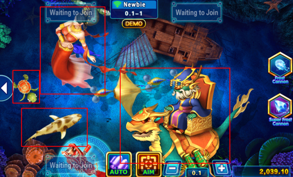
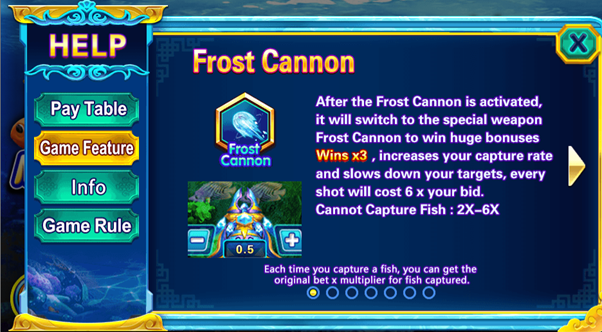

Bắn Cá KTO – Thăng Hoa Cùng Biển Cả!
Hãy tưởng tượng bạn đang lướt nhẹ giữa đại dương xanh thẳm, ánh mặt trời lấp lánh xuyên qua làn nước, soi sáng những đàn cá tung tăng bơi lội. Bỗng chốc, tiếng súng vang lên, bạn hóa thân thành thợ săn tài ba, chinh phục những chiến lợi phẩm đầy ắp kho báu! Đó chính là thế giới diệu kỳ của bắn cá KTO, nơi khơi dậy niềm đam mê khám phá và rèn luyện kỹ năng săn cá thượng thừa.

Khám phá thế giới bắn cá tuyệt vời trên KTO
Bước vào thế giới bắn cá KTO, bạn như lạc bước vào một bức tranh thủy mặc sống động. Nào là rạn san hô rực rỡ, nào là hang động bí ẩn, tất cả hiện lên sinh động với từng chi tiết tỉ mỉ. Dàn âm thanh sống động tái hiện tiếng sóng vỗ, tiếng cá tung tăng, tiếng súng nổ vang dội, đưa bạn vào hành trình săn cá đầy kịch tính.
Hơn cả một trò chơi giải trí, bắn cá KTO còn là cuộc phiêu lưu truy tìm kho báu chìm dưới đáy đại dương. Mỗi đàn cá đại diện cho những phần thưởng khác nhau, từ những chú cá nhỏ bé mang đến tiền thưởng nho nhỏ đến những con boss khổng lồ ẩn chứa kho báu khổng lồ.
Hãy tham giabắn cá KTO ngay hôm nay và bắt đầu hành trình khám phá đại dương bao la, truy tìm kho báu bí ẩn và khẳng định bản thân là thợ săn cá tài ba nhất! Biển cả mênh mông đang chờ đón bạn, hứa hẹn mang đến những giây phút giải trí tuyệt vời và những phần thưởng giá trị!
Bắn Cá KTO – Nơi Thoả Mãn Đam Mê Săn Cá
Đăng nhập tài khoản KTO, phiêu lưu đến thế giới đại dương bao la ngay thôi! Chọn “Casino” trên thanh menu, kéo xuống và click “Bắn Cá”. Một màn hình với 2 lựa chọn sẽ hiện ra: Săn Cá AG và Săn Cá JDB. Đã đến lúc cuộc đi săn bắt đầu!!
Khám phá trò chơi bắn cá trên nền tảng KTO
Săn Cá AG
Săn Cá AG chính là huyền thoại của làng game bắn cá KTO online, nơi mang đến trải nghiệm chân thực như đang lặn xuống biển sâu. Cá lớn, cá nhỏ bơi lội tung tăng, hứa hẹn những phần thưởng “béo bở” cho mọi tay săn. Đặc biệt, Săn Cá AG còn được tích hợp nhiều tính năng thú vị, nâng cao trải nghiệm chơi game.
Không cần loay hoay học hỏi phức tạp, Săn Cá AG chào đón cả người mới lẫn tay chơi lão làng. Giao diện thân thiện, dễ dàng thao tác, chỉ vài phút là bạn đã có thể tung lưới điêu luyện. Đồ họa bắt mắt, âm thanh sống động như tiếng sóng vỗ rì rào, tiếng cá quẫy nước tung tóe, đưa bạn vào hành trình săn cá kịch tính, hồi hộp đến nghẹt thở.
Săn Cá AG mang đến những tựa game bắn cá KTO kinh điển như “Big Fish” (Cá Khủng), nâng tầm trải nghiệm với đồ họa đỉnh cao và hiệu ứng âm thanh chân thực. Bạn sẽ được đắm mình vào thế giới đại dương ảo diệu, nơi những chú cá khổng lồ ẩn chứa phần thưởng giá trị đang chờ đợi. Hãy thử thách bản thân với các vòng bonus bất ngờ và chinh phục những giải thưởng “khủng” chưa từng có!
Nếu bạn yêu thích cảm giác vừa quen thuộc vừa mới lạ, thì “Fishing Hunter King” (Vua Săn Cá) chính là lựa chọn hoàn hảo. Săn Cá AG mang đến lối chơi đơn giản nhưng đầy hấp dẫn, kết hợp với các phần thưởng bonus “siêu khủng” hứa hẹn mang lại những giờ phút giải trí bất tận.
Săn Cá JDB: Thiên Đường Giải Trí Đa Dạng
Sàn đấu Săn Cá JDB là một thế giới giải trí trực tuyến sôi động, nơi các tay săn cá tài ba hội tụ. Với đa dạng các tựa game bắn cá hấp dẫn như Dragon Fishing (Bắn Cá Rồng), Cai Shen Fishing (Bắn Cá Thần Tài), Five Dragon Fishing (Bắn Cá Ngũ Long), Fishing YiLuFa (Bắn Cá Nhất Lộ Phát), Dragon Master (Bắn Cá Rồng) và Fishing Disco (Bắn Cá Disco), Săn Cá JDB đảm bảo mang đến cho bạn những trải nghiệm đáng nhớ nhất.
Khám phá trò chơi Câu cá JDP trên KTO
Không phân biệt “tay mơ” hay “cao thủ”, Săn Cá JDB luôn chào đón bạn bằng lối chơi đơn giản, dễ hiểu. Chỉ cần vài thao tác cơ bản, bạn đã có thể bắt đầu hành trình chinh phục đại dương. Đồ họa tươi sáng, âm thanh vui nhộn tạo nên bầu không khí sôi động, kích thích tinh thần chiến đấu của mọi tay săn.
Bắn Cá KTO – Cả Đại Dương Trong Tầm Ngắm
Bắn cá KTO – cái tên đang làm mưa làm gió trong làng game đổi thưởng. Không phải tự nhiên mà trò chơi này lại thu hút đông đảo anh em đến vậy. Hãy cùng lặn xuống biển cả KTO, khám phá thế giới muôn màu muôn vẻ và mang về những phần thưởng giá trị nào!
Trận chiến dưới đáy đại dương này diễn ra khá đơn giản. Tưởng tượng bạn là một tay săn cá cừ khôi, trang bị những khẩu pháo uy lực. Bên cạnh bạn còn có 3 chiến hữu cùng chung mục tiêu: hạ gục những đàn cá đang tung tăng bơi lội. Mỗi chú cá đều có giá trị riêng, tùy thuộc vào độ quý hiếm, máu chiến và tốc độ di chuyển. Cá càng to, càng hiếm thì phần thưởng càng lớn nhưng đòi hỏi kỹ năng thiện xạ thượng thừa. Giống như câu “cá lớn nuốt cá bé”, những chú cá nhỏ dễ hạ gục hơn nhưng cũng mang lại ít vàng hơn.
Điều thú vị là biển cá KTO luôn nhộn nhịp. Lũ cá liên tục di chuyển, đòi hỏi bạn phải có đôi mắt tinh anh để theo dõi mục tiêu. Và đây chính là điểm thử thách tài năng của các tay săn. Đừng quên, “đạn dược” trong trò chơi này chính là tiền của bạn. Bắn trượt thì coi như mất đạn (mất tiền), nhưng hạ được cá thì phần thưởng sẽ khiến bạn mở mày đấy!
Uy lực của súng bắn cá KTO cũng là một yếu tố quan trọng. Mặc định, súng sẽ bắn theo tỷ lệ 1:1, nghĩa là 1 lần bắn tốn 1 đơn vị tiền. Tuy nhiên, với những chú cá trâu bò, tỷ lệ này là không đủ để tiễn chúng lên đường. Đây là lúc anh em thể hiện đẳng cấp sát thủ của mình. Bạn có thể tùy chỉnh hỏa lực lên mức 1:5, 1:20, thậm chí là 1:50. Càng tăng hỏa lực, cá càng dễ tử nạn nhưng rủi ro “bắn cả kho bạc” cũng cao hơn.
Trước khi ra khơi, đừng quên chọn mức cược phù hợp và “vũ khí chiến đấu” ưng ý nhé! Khi bắt đầu trò chơi, đủ loại cá sẽ xuất hiện trên màn hình. Nhiệm vụ của bạn là hạ gục càng nhiều cá càng tốt. Mỗi chú cá có giá trị riêng, cứ bắn trúng là vàng tự động nhảy vào túi bạn. Kết thúc màn chơi, tổng số vàng bạn kiếm được sẽ được cộng thẳng vào tài khoản.
Bắn Cá KTO – Bí Kíp Nhập Môn
Anh em đã sẵn sàng oanh tạc đại dương, rinh về những mẻ cá “siêu to khổng lồ” tại bắn cá KTO chưa? Để tham gia cuộc chơi hấp dẫn này, chỉ cần vài bước đơn giản như bắn cá rô phi thôi, anh em nhé!
Đầu tiên, hãy truy cập vào trang chủ KTO, sau đó lướt nhẹ chuột lên thanh menu phía trên. Trong danh mục “Trò Chơi Casino”, click ngay vào “Bắn Cá” để được đưa thẳng đến “sân chơi” hoành tráng. KTO có tới 2 phòng chơi riêng biệt, mỗi phòng đều mang đến những trải nghiệm độc đáo.
Lưu ý nho nhỏ: Để “tung hoành ngang dọc” dưới đáy biển KTO, anh em cần có “thẻ thông hành” chính là tài khoản KTO. Nếu chưa có tài khoản, anh em chỉ cần vài phút để đăng ký. Còn nếu đã là chiến hữu quen thuộc của KTO, chỉ cần đăng nhập bằng thông tin tài khoản là có thể “xông pha” ngay lập tức.
Lưu ý nho nhỏ: Để tham gia trải nghiệm thú vị dưới đáy biển KTO, bạn cần có tài khoản KTO
Tuy nhiên, nếu chưa đăng nhập mà chỉ muốn “thăm dò” thử thì KTO cũng rất chiều lòng anh em. Nhưng nhớ kỹ điều này: “Chế độ chơi thử – Tiền thắng không được phép rút”. Đây đơn giản là chế độ cho phép anh em trải nghiệm “cảm giác bắn cá” miễn phí trước khi “chạm trán” thực sự.
Vì vậy, để “cá không thoát, tiền về túi”, anh em hãy đăng ký tài khoản KTO và đăng nhập để “chinh chiến” nhé!

Cược trò chơi theo tỷ lệ 1:1000 Việt Nam Đồng trên KTO
Một lưu ý quan trọng nữa: “Mức cược trong game được hiển thị theo tỷ lệ 1:1000 VND”. Nghĩa là, mỗi đơn vị tiền cược tương đương với 1000 VND. Trong Bắn Cá, anh em có thể tùy chỉnh “sức mạnh” của mỗi lần bắn, được gọi là “tỷ lệ cá cược”. Tỷ lệ này quyết định số tiền bỏ ra và phần thưởng nhận được. Ví dụ, tỷ lệ 1:1000 nghĩa là cứ 1 đơn vị tiền cược thì được tính thành 1000 VND.
Nếu anh em đặt cược 10 đơn vị với tỷ lệ 1:1000, thì số tiền thực tế bỏ ra là 10 x 1000 = 10.000 VND. Hệ thống tỷ lệ này giúp anh em chủ động “vung tiền” theo chiến thuật và khả năng “chịu chơi” của mình. Nhớ nhé, tỷ lệ càng cao, phần thưởng càng lớn nhưng rủi ro “mất đạn” cũng cao hơn đấy!
Còn chần chờ gì nữa? Đăng ký KTO, nạp đạn, “bắn cá” và hốt bạc thôi nào!
Làm Thế Nào Để Bắn Cá KTO Thoả Thích?
Vừa nãy bạn đã học cách đăng ký tài khoản, giờ thì đến phần hấp dẫn nhất – chiến đấu dưới đại dương rực rỡ cùng KTO! Hãy cùng lặn xuống và khám phá từng bước chơi bắn cá KTO đơn giản nhưng siêu thú vị này:
Bước 1: Chọn sảnh chơi – Thiên đường đại dương dành cho bạn
Đầu tiên, bạn cần chọn sảnh chơi. Giống như các khu vực khác nhau trên biển cả, KTO có sảnh AG và sảnh JDB, mỗi sảnh đều mang đến những trải nghiệm độc đáo. Mỗi sảnh lại có nhiều phòng chơi với các mức độ khó và phần thưởng đa dạng. Bí kíp ở đây là chọn sảnh phù hợp với túi tiền và kỹ năng của bạn, để chuyến đi săn cá luôn trọn vẹn!
Bước 2: Tuyệt chiêu nào cho bạn? – Lựa chọn trò chơi
Biển cả KTO rộng lớn với vô số trò chơi hấp dẫn, tha hồ cho bạn lựa chọn. Bạn có thể thử tài với Bắn Cá Rồng, Bắn Cá Thần Tài, Bắn Cá Ngũ Long, Bắn Cá Nhất Lộ Phát, Long Thần hoặc Bắn Cá Disco.
Mỗi khi chọn trò chơi, KTO sẽ bật mí cho bạn một mẹo nhỏ, giúp bạn chinh phục đại dương dễ dàng hơn.
Mẹo chuyên nghiệp từ KTO khi chọn trò chơi
Bước 3: Khu vực chiến đấu – Chọn chiến trường phù hợp
Sau khi đọc mẹo và ấn thoát, bạn sẽ được đưa đến màn hình chọn chiến trường. Giống như đại dương bao la có nhiều vùng biển khác nhau, KTO cung cấp 3 khu vực chơi để bạn lựa chọn:
Vùng biển Tân thủ: Đây là khu vực lý tưởng cho những tay súng mới vào nghề, giúp bạn làm quen với cách chơi và các loài cá.
Vùng biển Vua Rồng: Còn gì tuyệt vời hơn khi được chiến đấu như một Vua Rồng tại đây? Khu vực này dành cho những tay săn cá cự phách, sẵn sàng chinh phục những thử thách khó khăn nhất.

Chọn khu vực chơi hoặc sân chơi trên KTO
Lưu ý, ở phía tay trái màn hình, bạn sẽ thấy tên tài khoản “demo019202”. Đây là tài khoản dùng để chơi thử, cho phép bạn trải nghiệm cảm giác bắn cá miễn phí tại KTO. Dĩ nhiên, khi đăng nhập bằng tài khoản thật, tên hiển thị sẽ là tên bạn đã đăng ký.
Không những thế, tài khoản chơi thử này còn được tặng ngay 2.000 VND để bạn bắt đầu cuộc hành trình. Bạn cũng có thể tắt tiếng trò chơi bằng cách nhấp vào biểu tượng cài đặt ở góc phải màn hình.
Bước 4: Bắt Đầu Chinh Phục Đại Dương
Chọn xong chiến trường, giờ là lúc xả đạn và chinh phục đại dương rực rỡ tại bắn cá KTO! Hãy cùng xem kỹ chiến trường này nhé:
Bước tiếp theo: Chính thức vào trò chơi – Giao diện bắt đầu trận đấu
Ngay khi bạn chọn khu vực chơi, màn hình sẽ hiển thị hướng dẫn ban đầu. Biết địch biết ta trăm trận trăm thắng – bạn sẽ được giới thiệu về “vị trí” của mình và “vũ khí đặt cược” để lựa chọn hỏa lực phù hợp. Trong kho vũ khí của bạn có “Pháo Băng” và “Siêu Pháo Băng” – những vũ khí hạng nặng sẵn sàng hạ gục mọi mục tiêu.

Giao diện cho tham gia trong khu vực chơi trên KTO
Như đã đề cập trước đó, mỗi phòng chơi sẽ có tối đa 4 tay săn, bao gồm bạn. Vì đang chơi thử nên bảng thông báo sẽ hiển thị “đang chờ tham gia”.
Bên tay phải màn hình là khu vực trưng bày các vũ khí đặc biệt. Đây là những vũ khí “ruột” mà bạn có thể lựa chọn trong suốt quá trình chiến đấu tùy theo chiến thuật của mình.
Dưới cùng màn hình, bạn sẽ thấy hai nút bấm quan trọng: “Tự động” và “Hết đạn tự nạp”. Nút “Tự động” sẽ giúp bạn liên tục bắn vào một mục tiêu nhất định cho đến khi hạ gục hoặc cho đến khi bạn dừng lại. Ngược lại, nút “Hết đạn tự nạp” sẽ giúp bạn ngắm bắn chính xác vào một chú cá bất kỳ, bất kể kích thước, cho đến khi nó “lên bảng” hoặc bạn ngừng tấn công.

Nút tự động và nhắm trên màn hình chính
Mục tiêu rực rỡ, phần thưởng hấp dẫn!
Nhìn kỹ vào màn hình, bạn sẽ thấy vô vàn sinh vật biển với đủ kích cỡ tung tăng bơi lội. Mỗi sinh vật biển tương ứng với một phần thưởng khác nhau. Bạn sẽ được trang bị “Pháo Cơ Bản” được nạp đạn bằng tiền trong tài khoản.
Ví dụ, bạn thấy một ô nhỏ hiển thị “0.1” ngay bên dưới pháo của mình. Đây chính là giá của một viên đạn, được trừ trực tiếp vào tài khoản của bạn mỗi khi bắn.
Lưu ý, tất cả người chơi trong cùng phòng sẽ “săn” chung một đàn cá. Đàn cá này đa dạng về kích thước, tốc độ bơi và phần thưởng. Cá nhỏ dễ hạ gục hơn nhưng phần thưởng ít, trong khi cá lớn đòi hỏi nhiều đạn hơn nhưng đổi lại, phần thưởng cũng “béo bở” hơn nhiều.
Những chú cá này liên tục di chuyển trên màn hình, vì vậy hãy chú ý xem chúng vừa mới xuất hiện hay sắp sửa biến mất. Ngoài ra, đừng quên rằng còn 3 tay săn khác đang cùng “tranh mồi” với bạn. Chiến thuật ở đây là vừa tiết kiệm ngân sách đạn dược, vừa biết cách tận dụng những chú cá đã bị thương bởi đối thủ.
Một điều quan trọng cần nhớ:
Ngay cả khi bạn bắn liên tục vào một chú cá nhưng “kẻ kết liễu” cuối cùng lại là pháo của đối thủ, thì phần thưởng sẽ thuộc về người chơi đó. Bởi vì, theo luật chơi, phần thưởng sẽ được trao cho người chơi có phát đạn cuối cùng hạ gục được mục tiêu.
Chú ý khi chơi game bắn cá trên KTO
Ngoài cá thường, bạn còn có thể săn được các “Rương Báu Vật” trôi nổi trên màn hình, mang lại những phần thưởng giá trị nhất.
Nút Rich Dragon King và giải thưởng
Đặc biệt, hãy để ý đến biểu tượng “Rich Dragon King” (Vua Rồng Giàu Có). Đây là mục tiêu “béo bở” nhất, có thể giúp bạn nhân phần thưởng lên đến 100X – 500X!
Điều chỉnh tốc độ và tầm bắn của khẩu pháo
Cuối cùng, các dấu “+” và “-” trên pháo cho phép bạn điều chỉnh kích cỡ pháo và tầm bắn. Tuy nhiên, lưu ý rằng nâng cấp pháo sẽ đồng nghĩa với việc tiêu tốn nhiều đạn dược hơn. Hãy cân nhắc lựa chọn vũ khí phù hợp với chiến thuật và ngân sách của bạn nhé!
Hướng Dẫn Kiếm Tiền Đỉnh Cao Tại Bắn Cá KTO
Bắn cá đổi thưởng tại KTO không chỉ thú vị mà còn mang lại cơ hội kiếm tiền hấp dẫn. Cùng khám phá chiến thuật “bách chiến bách thắng” để biến đam mê thành lợi nhuận ngay bây giờ
Kiếm tiền từ đại dương – Nạp đạn và chiến đấu!
Cách thức kiếm tiền tại bắn cá KTO vô cùng đơn giản. Bạn sẽ nạp tiền KTO vào tài khoản, sau đó sử dụng số tiền này để bắn hạ những chú cá đầy màu sắc trên màn hình. Khi kết thúc trò chơi, số tiền thắng cược sẽ được cộng dồn vào tài khoản của bạn và có thể dễ dàng rút ra.
Hiển thị số tiền hiện có và sử dụng trong chiến lược bắn cá
Chiến lợi phẩm mà bạn có thể rút về sẽ được hiển thị rõ ràng ở phía bên trái màn hình. Tuy nhiên, để gia tăng lợi nhuận và đưa ra chiến thuật hiệu quả, bạn không thể bỏ qua bảng “Bảng Cá” – kim chỉ nam dẫn bạn đến kho báu!
Bảng Cá – Bản đồ dẫn lối thành công tại Bắn Cá KTO
Hãy cùng lặn sâu và khám phá “Bảng Cá” chi tiết:
Tổng hợp các mức tiền thưởng dành cho các loài cá
Đội quân cá tầm trung: Chúng hơi “dẻo dai” hơn một chút, nhưng phần thưởng cũng hấp dẫn hơn, dao động từ 30X đến 60X.
Bảng tiền thưởng dành cho các loài cá có kích thước từ 30X đến 60X
Cá “bự” – Cá “khoẻ” – Cá “nhiều tiền”: Mục tiêu này đòi hỏi kỹ năng ngắm bắn chính xác và lượng đạn lớn hơn.
Bảng tiền thưởng dành cho các loài cá lớn với phần thưởng lên đến 100X
Tuy nhiên, phần thưởng cũng không khiến bạn thất vọng, lên đến 150X hoặc thậm chí “đổi đời” với mức 100X đến 300X.
Khám phá những phần thưởng đặc biệt với mức lên tới 150X hoặc 100X đến 300X
Rương báu bí ẩn: Đây là mục tiêu “may mắn” có thể mang lại phần thưởng gấp 100X đến 500X. Hãy thử vận may của bạn nhé!
Khám phá kho báu đặc biệt với phần thưởng lên tới 100X đến 500X
Cá “khủng” – Boss của đại dương: Đây là con cá “trùm” đáng gờm nhất trên màn hình, nhưng phần thưởng của nó cũng “khủng” nhất, lên đến 20X đến 4500X!
Khám phá con cá khổng lồ với phần thưởng lên tới 20X đến 4500X
Vua Rồng quyền năng: Chinh phục Vua Rồng, bạn sẽ được “vua” phần thưởng với mức 100X đến 500X. Chắc chắn đây sẽ là chiến lợi phẩm khiến bạn vô cùng tự hào!
Khám phá phần thưởng cuối cùng và lớn nhất từ Dragon King
Tính Năng Đặc Biệt Tại Bắn Cá KTO: Khám Phá Bí Ẩn Đại Dương
Biển cá KTO không chỉ có cá to, mà còn ẩn chứa vô vàn báu vật và vũ khí đỉnh cao. Để trở thành tay săn cá huyền thoại, anh em cần nắm rõ những “vũ khí chiến lược” sau:
1. Pháo Băng – Săn Bắt Siêu Đỉnh:
Kích hoạt Pháo Băng, anh em sẽ được trang bị “súng đặc biệt”. Súng này không những giúp “bắn cá to rinh thưởng khủng” (lên đến 3X), mà còn tăng tỉ lệ bắt mồi và làm chậm mục tiêu. Tuy nhiên, mỗi phát bắn từ Pháo Băng sẽ tốn gấp 6 tiền cược thông thường.

Khám phá sức mạnh của Pháo Băng Giá
2. Siêu Pháo Băng – Thần Súng Bách Chiến:
Đây chính là “vũ khí tối thượng” trên chiến trường bắn cá KTO. Siêu Pháo Băng mang đến khả năng hạ gục cá khủng với phần thưởng “khủng long” (3X, 7X, 10X). Không những thế, nó còn giúp làm chậm đối thủ, tăng tỉ lệ bắt mồi và gia tăng sức mạnh cho từng viên đạn (lên đến 15X tiền cược).
Khám phá sức mạnh của Pháo Siêu Băng Giá
3. Long Thần Công
Kích hoạt Long Thần Công, hệ số nhân thưởng cơ bản sẽ “bốc đầu” lên 10X, kèm theo 30 viên đạn miễn phí.
Khám phá sức mạnh của Rồng Bazooka
Những điều cần lưu ý khi chơi KTO slot lucky7:
Nếu sử dụng Pháo Băng hạ gục Long Thần Công: Anh em sẽ được “thưởng nóng” 40 viên đạn miễn phí.
Sử dụng Siêu Pháo Băng Giá hạ gục Long Thần Công: Phần thưởng sẽ “siêu khủng” với 60 viên đạn miễn phí, đi kèm hệ số nhân thưởng đạn từ 1X đến 6X.
4. Vòng Quay May Mắn – Thần Tài Gõ Cửa:
Trong quá trình “tung hoành ngang dọc”, anh em có thể gặp “vòng quay may mắn”. Vòng quay này sẽ giúp gia tốc tiền thưởng, mang về cho anh em phần thưởng “khủng bố” từ 20X đến 4500X.
Dừng tại ô Nâng Cấp Vòng quay: Tăng điểm thưởng trên vòng quay.
Nâng cấp với Vòng Quay May Mắn: Điểm thưởng trên vòng quay bonus sẽ được nhân lên ngẫu nhiên.
Khám phá Roulette May Mắn
Nếu dừng tại ô Điểm Thưởng: Nhận điểm thưởng và kết thúc trò chơi bonus.
Nếu dừng tại ô Nâng Cấp Vòng quay: Tăng điểm thưởng trên vòng quay.
Và khi Nâng cấp với Vòng Quay May Mắn: Điểm thưởng trên vòng quay bonus sẽ được nhân lên ngẫu nhiên.
5. Vua Rồng Giàu Có – Thần Thưởng Siêu Khủng:
Săn lùng Vua Rồng Giàu Có trên bảng bắn cá, anh em sẽ có cơ hội kích hoạt “bonus may mắn”. Phần thưởng “siêu to khổng lồ” từ 100X đến 500X tiền cược đang chờ đón cho đến khi Vua Rồng biến mất.
Khám phá Vua Rồng Giàu Có
Luật Chơi
Bắn cá KTO là cuộc chơi “thi thố tài năng” theo kiểu “nhiều người chơi cùng lúc”. Hướng đạn phụ thuộc vào hướng pháo.
Đạn bay chạm vào mép màn hình sẽ bật lại cho đến khi chạm cá.
Mỗi lần chơi, anh em có thể bắn tối đa 10 viên đạn, mỗi viên với mức cược khác nhau.
Bắn Cá KTO: Bí kíp chinh chiến, đạn dược rủng rỉnh, tiền về ào ào!
Anh em muốn bắn cá trúng mánh, cá không thoát, tiền về túi khi chơi Bắn Cá KTO? Vậy thì đừng bỏ qua những tuyệt chiêu sau đây:
1. Chọn sân chơi phù hợp
Biển cá KTO rộng lớn với nhiều trò chơi đa dạng. Điều quan trọng là chọn được sân chơi phù hợp với gu và kỹ năng của mình. Giống như đi câu, phải chọn đúng hồ thì mới có cá to. Tìm hiểu kỹ luật chơi, giao diện, và thử chơi bản demo trước khi dấn thân vào cuộc chiến thực sự.
2. Bắn theo đàn
Đừng ham hố lao vào bắn những chú cá ngáo ngáo tung tăng một mình. Hãy kiên nhẫn chờ đợi đàn cá xuất hiện. Bắn theo đàn sẽ giúp anh em gia tăng tỉ lệ bắn trúng, cá nằm gọn. Nhớ nhé, chậm mà chắc là thượng sách!
3. Cá nhanh – Cá chậm – Cá to – Cá nhỏ
Cá càng to, tiền thưởng càng lớn nhưng cũng đòi hỏi kỹ thuật bắn điệu nghệ hơn. Cá nhỏ thì dễ bắn nhưng lại ít tiền. Cá bơi nhanh thì khó ngắm, cá bơi chậm thì dễ hơn.
4. Cá ẩn nấp – Kẻ thù nguy hiểm
Những chú cá thích trốn kỹ dưới đáy biển, sau rặng san hô thường là kẻ thù nguy hiểm của đạn dược. Tốn nhiều đạn mà chưa chắc đã hạ được thì thôi bỏ qua, tập trung vào những mục tiêu dễ dàng hơn.
5. Đạn dược là vàng
Với những tay săn cá mạnh gạo bạo tiền, cứ cá to mà bắn! Tuy đạn dược tiêu hao nhanh nhưng phần thưởng thì siêu khủng.
6. Kiên nhẫn là vàng
Đừng thấy cá nhiều mà bắn xả láng, đạn hết nhanh mà cá vẫn tung tăng. Giữ cái đầu lạnh, kiên nhẫn chờ đợi thời cơ và bắn chỉ thiên (bắn chính xác). Giống như câu câu chậm mà chắc, bắn chậm nhưng chính xác sẽ giúp anh em cá to không thoát.
7. Đạn đủ thì mới chiến
Trước khi ra trận, hãy đảm bảo đạn dược đủ đầy. Nhất là trong chế độ chơi nhiều người, nếu hết đạn giữa chừng thì coi như bại trận.
8. Không đặt nặng thắng thua
Hãy xác định bắn cá KTO là trò chơi giải trí – chơi vui là chính. Đặt ra hạn mức cá cược hợp lý, biết dừng biết nghỉ. Đừng vì ham hố mà vung tiền quá tay.
9. Bắn từng viên, trúng từng con
Không cần bắn như máy, hãy bắn từng viên, tính toán kỹ lưỡng để hạ gục mục tiêu. Bắn ít trúng nhiều mới là cao thủ.
10. Đừng bỏ qua mục tiêu vàng
Trong biển cả KTO, luôn có những mục tiêu vàng như ngọc trai, bong bóng may mắn, hay cá 7 sắc. Chúng tuy ít xuất hiện nhưng phần thưởng thì khủng bố.
Khuyến Mãi Bắn Cá KTO: Nơi Đam Mê Biến Thành Vàng
Bạn đã sẵn sàng cho một cuộc phiêu lưu dưới đáy đại dương, nơi cá mập bằng tiền và rương báu chất đầy phần thưởng đang chờ đợi? KTO mang đến cho bạn trải nghiệm bắn cá đổi thưởng đỉnh cao với chương trình khuyến mãi KTO “Hoàn Trả Cá Cược Hàng Ngày 1%, Tiền Thưởng Không Giới Hạn”!
Hãy tưởng tượng, với mỗi chú cá bạn bắn hạ, bạn không chỉ nhận được phần thưởng thông thường mà còn được tích lũy thêm 1% tiền cược dưới dạng hoàn trả. Số tiền hoàn trả này không giới hạn, càng chơi nhiều, bạn càng “hốt bạc” nhiều!
Điều kiện tham gia:
Sản phẩm: Bắn Cá
Cược hợp lệ mỗi ngày tối thiểu 50K
Tiền hoàn trả: 1%
Giới hạn tối đa: Không giới hạn
Một vài lưu ý nhỏ trước khi tham gia:
Khuyến mãi chỉ áp dụng cho tài khoản có thông tin chính xác, không trùng lặp với các tài khoản khác.
Số tiền hoàn trả được tính dựa trên tổng tiền cược hợp lệ trong ngày và được cộng vào tài khoản của bạn từ 5:00 đến 9:00 (ET).
Sử dụng gian lận, phần mềm cá cược hoặc hợp tác gian lận với đại lý sẽ dẫn đến khóa tài khoản vĩnh viễn và tịch thu toàn bộ tiền.
Nghiêm cấm việc chia sẻ tài khoản, tên đăng nhập, thông tin cá nhân với người khác. Nếu hệ thống phát hiện các tài khoản trùng lặp, tiền thưởng có thể bị hủy bỏ. Không cần đăng ký tham gia khuyến mãi, tiền thưởng sẽ tự động cập nhật vào tài khoản và có thể rút tiền KTO ngay mà không cần điều kiện. KTO có quyền thay đổi, tạm dừng hoặc hủy bỏ khuyến mãi bất cứ lúc nào mà không cần báo trước.
Hãy sẵn sàng để săn tìm lũ cá đầy màu sắc và hốt về những phần thưởng siêu khủng. Bắn cá KTO là nơi hội tụ những pha hành động nghẹt thở, những màn chiến đấu kịch tính, và cơ hội vàng để bạn đổi đời. Dù là tân binh hay cá thủ gạo cội, KTO đều mang đến trải nghiệm tuyệt vời, vừa dễ chơi lại vừa kích thích vô cùng.
Còn chần chừ gì nữa? Nhảy ngay xuống biển KTO và tận hưởng cảm giác bắn cá đổi thưởng đỉnh cao! Nào, cùng nhau nạp đạn, ngắm bắn, và rinh về những chiến lợi phẩm giá trị!